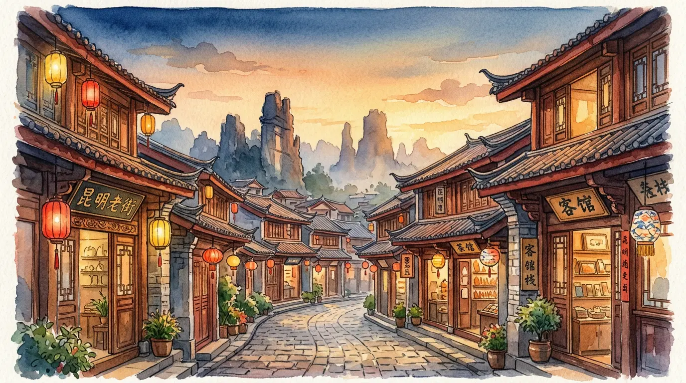

紅瓦上嘅夕陽
由香港落機，專車接你入索菲特。雙橋夜市食碗豆花米線、街口買杯水果茶。第二朝出發去石林睇喀斯特石柱，黃昏喺撈魚河濕地等滇池嘅日落，晚上返昆明老街，喺青磚老巷之間揾一間雲南菜館慢慢食。
- 石林風景區 · 世界自然遺產
- 撈魚河濕地 · 滇池東岸日落
- 昆明老街 · 雲南小食

中國 · 雲南 · 二〇二六年秋
由滇池畔嘅紅瓦，一路向北、一路向高，行到梅里雪山嘅金光。
行程一覽
由昆明出發坐火車去大理，沿洱海北上麗江，繞去瀘沽湖睇日出，再翻過白馬雪山入香格里拉，最後喺飛來寺等梅里嘅日照金山。
由香港落機，專車接你入索菲特。雙橋夜市食碗豆花米線、街口買杯水果茶。第二朝出發去石林睇喀斯特石柱，黃昏喺撈魚河濕地等滇池嘅日落，晚上返昆明老街，喺青磚老巷之間揾一間雲南菜館慢慢食。
火車去大理，沿洱海邊行：第一站理想邦睇白屋藍頂，雙廊古鎮喺湖邊發呆，小普陀坐喺島上。翌日喜洲粑粑食一個，周城白族扎染染條布巾，喺龍龕碼頭打卡洱海 S 彎，崇聖寺三塔尖頂指住天，夜晚返大理古城慢遊。
蒼山感通索道半山有間寂照庵，鮮花滿園供觀音。玉龍雪山主峰五千五百米，雲杉坪望雪線，藍月谷流出乳藍色嘅水。傍晚去白沙古鎮睇東巴壁畫，夜晚返麗江古城，柳樹底坐住飲杯酒。
瀘沽湖觀景台一覽湖光山色，夜晚摩梭篝火晚會，火堆邊跳鍋莊。翌晨四點起身，豬槽船載你去湖中心，等個太陽由山背升起；草海走婚橋，木橋穿過蘆葦，落午返麗江。
虎跳峽聽金沙江拍峽壁，獨克宗古城轉經輪。松贊林寺金頂下藏式佛堂，大經幡寺前掛滿祈福布。白馬雪山觀景台越過四千二百米山口，霧濃頂等翌朝日照金山。飛來寺，梅里雪山嘅十三峰染上金光——呢一刻先明白點解叫香格里拉。最後嘅普達措國家公園、納帕海，結束呢趟路。